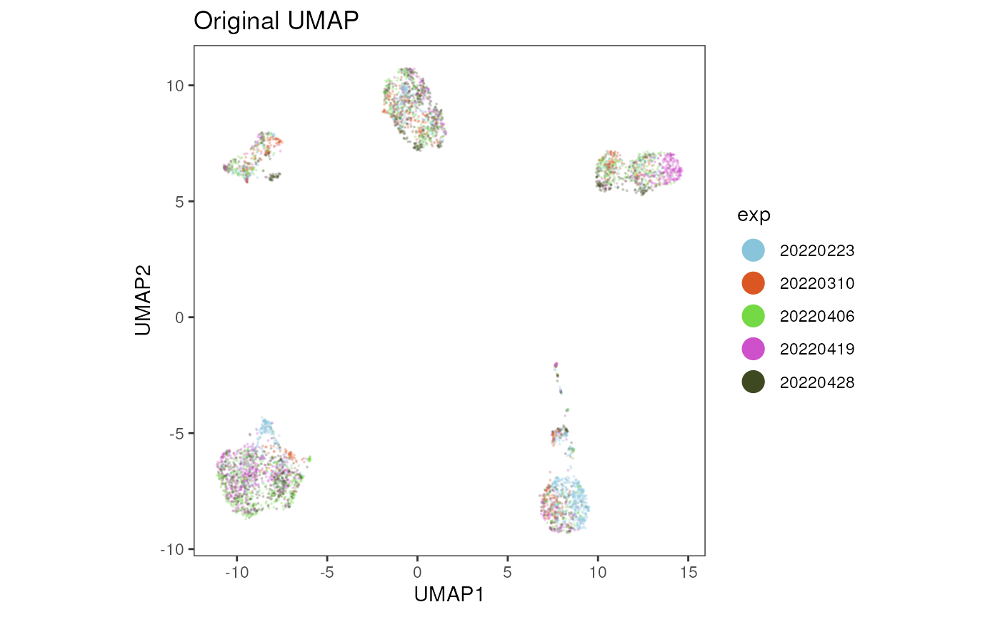
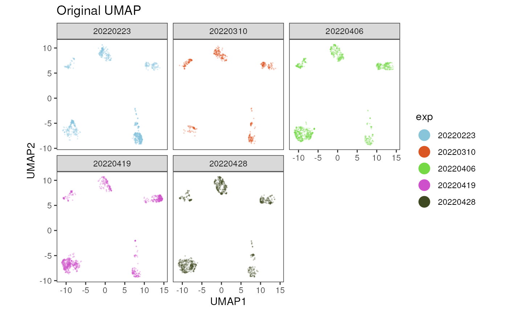
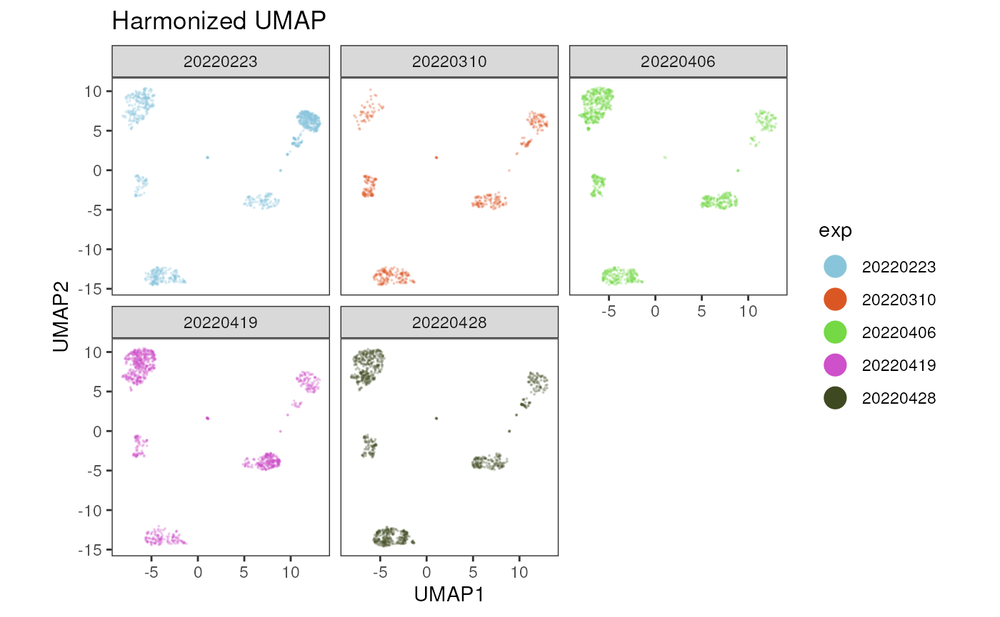

In this vignette we exemplify a workflow to correct for a batch effect induced by performing experiments (including cell preparation, staining and recording of flow cytometry data) on different dates. The example data set used in this vignette consists of peripheral blood mononuclear cells (PBMCs) from healthy donors.
1 cyCONDOR dimensionality reduction workflow
This first part describes the general cyCONDOR data
processing and dimensionality reduction workflow (see
vignettes("Data loading and transformation") and
vignettes("Dimensionality Reduction") for more details)
until the closer inspection of the data set and identification of a
technical batch effect.
Loading the data
We start by loading the data.
condor <- prep_fcd(data_path = "../.test_files/BatchCorrection/all/",
max_cell = 500,
useCSV = FALSE,
transformation = "auto_logi",
remove_param = c("Time", "FSC-H", "SSC-H"),
anno_table = "../.test_files/BatchCorrection/all.csv",
filename_col = "filename"
)
# set the date as factor for visualization purposes
condor$anno$cell_anno$exp <- as.factor(condor$anno$cell_anno$exp)Dimensionality Reduction
Next, we perform dimensionality reduction calculating the principal components (PCs) and the UMAP based on the PCs.
Inspection of batch effect
We can now visualize the batch effect in this data set by plotting the UMAP coordinates and coloring the cells by the experiment date.
plot_dim_red(fcd= condor,
reduction_method = "umap",
reduction_slot = "pca_orig",
param = "exp",
title = "Original UMAP")
plot_dim_red(fcd= condor,
reduction_method = "umap",
reduction_slot = "pca_orig",
param = "exp",
title = "Original UMAP",
facet_by_variable = TRUE)
2 Batch correction
Within the cyCONDOR ecosystem we implemented harmony and CytoNorm for batch
correction. The correction can be applied either to the protein
expression values (fluorescence intensities) or to the principal
components. There is no ‘magic bullet’ for batch correction and each of
these methods needs to be used with care to correct for the batch effect
but not the underlying biological effects. Therefore, each of the here
described methods should always be validated by inspecting the
expression of hallmark markers.
If you use this workflow in your work please consider citing cyCONDOR and harmony or CytoNorm.
2.1 Correct Principal Components
To use the harmony algorithm for correcting the
principal components, we use the harmonize_PCA() and define
the batch variable batch_var, in this example the
experiment date ‘exp’.
condor <- harmonize_PCA(fcd = condor,
batch_var = c("exp"),
data_slot = "orig")## Transposing data matrix## Initializing state using k-means centroids initialization## Harmony 1/10## Harmony 2/10## Harmony 3/10## Harmony converged after 3 iterationsThe harmonized PCs are saved in condor$pca$norm.
condor$pca$norm[1:10, 1:5]## PC1
## 20230322_AB_20220406_DH_193223821_193363_E2_Live_cells_comp.fcs_1 -1.1377724
## 20230322_AB_20220406_DH_193223821_193363_E2_Live_cells_comp.fcs_2 3.6662881
## 20230322_AB_20220406_DH_193223821_193363_E2_Live_cells_comp.fcs_3 2.4006793
## 20230322_AB_20220406_DH_193223821_193363_E2_Live_cells_comp.fcs_4 0.1994315
## 20230322_AB_20220406_DH_193223821_193363_E2_Live_cells_comp.fcs_5 3.6988799
## 20230322_AB_20220406_DH_193223821_193363_E2_Live_cells_comp.fcs_6 3.7043739
## 20230322_AB_20220406_DH_193223821_193363_E2_Live_cells_comp.fcs_7 2.5619230
## 20230322_AB_20220406_DH_193223821_193363_E2_Live_cells_comp.fcs_8 -2.7855854
## 20230322_AB_20220406_DH_193223821_193363_E2_Live_cells_comp.fcs_9 1.8170364
## 20230322_AB_20220406_DH_193223821_193363_E2_Live_cells_comp.fcs_10 4.0291312
## PC2
## 20230322_AB_20220406_DH_193223821_193363_E2_Live_cells_comp.fcs_1 -3.4642730
## 20230322_AB_20220406_DH_193223821_193363_E2_Live_cells_comp.fcs_2 1.5051951
## 20230322_AB_20220406_DH_193223821_193363_E2_Live_cells_comp.fcs_3 -0.1952621
## 20230322_AB_20220406_DH_193223821_193363_E2_Live_cells_comp.fcs_4 -1.0485322
## 20230322_AB_20220406_DH_193223821_193363_E2_Live_cells_comp.fcs_5 -0.1292137
## 20230322_AB_20220406_DH_193223821_193363_E2_Live_cells_comp.fcs_6 0.7853718
## 20230322_AB_20220406_DH_193223821_193363_E2_Live_cells_comp.fcs_7 1.2301255
## 20230322_AB_20220406_DH_193223821_193363_E2_Live_cells_comp.fcs_8 1.0542023
## 20230322_AB_20220406_DH_193223821_193363_E2_Live_cells_comp.fcs_9 -2.3273341
## 20230322_AB_20220406_DH_193223821_193363_E2_Live_cells_comp.fcs_10 0.6140877
## PC3
## 20230322_AB_20220406_DH_193223821_193363_E2_Live_cells_comp.fcs_1 -1.6885949
## 20230322_AB_20220406_DH_193223821_193363_E2_Live_cells_comp.fcs_2 0.3368425
## 20230322_AB_20220406_DH_193223821_193363_E2_Live_cells_comp.fcs_3 0.5490619
## 20230322_AB_20220406_DH_193223821_193363_E2_Live_cells_comp.fcs_4 -0.1086231
## 20230322_AB_20220406_DH_193223821_193363_E2_Live_cells_comp.fcs_5 -0.1193580
## 20230322_AB_20220406_DH_193223821_193363_E2_Live_cells_comp.fcs_6 0.5634436
## 20230322_AB_20220406_DH_193223821_193363_E2_Live_cells_comp.fcs_7 -0.7273368
## 20230322_AB_20220406_DH_193223821_193363_E2_Live_cells_comp.fcs_8 -0.6713721
## 20230322_AB_20220406_DH_193223821_193363_E2_Live_cells_comp.fcs_9 -1.0218579
## 20230322_AB_20220406_DH_193223821_193363_E2_Live_cells_comp.fcs_10 0.7951340
## PC4
## 20230322_AB_20220406_DH_193223821_193363_E2_Live_cells_comp.fcs_1 1.89605907
## 20230322_AB_20220406_DH_193223821_193363_E2_Live_cells_comp.fcs_2 -0.71224125
## 20230322_AB_20220406_DH_193223821_193363_E2_Live_cells_comp.fcs_3 2.50342900
## 20230322_AB_20220406_DH_193223821_193363_E2_Live_cells_comp.fcs_4 0.79742800
## 20230322_AB_20220406_DH_193223821_193363_E2_Live_cells_comp.fcs_5 0.81283079
## 20230322_AB_20220406_DH_193223821_193363_E2_Live_cells_comp.fcs_6 0.73554764
## 20230322_AB_20220406_DH_193223821_193363_E2_Live_cells_comp.fcs_7 0.62596763
## 20230322_AB_20220406_DH_193223821_193363_E2_Live_cells_comp.fcs_8 -0.83265025
## 20230322_AB_20220406_DH_193223821_193363_E2_Live_cells_comp.fcs_9 0.19543499
## 20230322_AB_20220406_DH_193223821_193363_E2_Live_cells_comp.fcs_10 -0.07020503
## PC5
## 20230322_AB_20220406_DH_193223821_193363_E2_Live_cells_comp.fcs_1 0.95653887
## 20230322_AB_20220406_DH_193223821_193363_E2_Live_cells_comp.fcs_2 0.28052891
## 20230322_AB_20220406_DH_193223821_193363_E2_Live_cells_comp.fcs_3 1.47298748
## 20230322_AB_20220406_DH_193223821_193363_E2_Live_cells_comp.fcs_4 -2.31488868
## 20230322_AB_20220406_DH_193223821_193363_E2_Live_cells_comp.fcs_5 1.22041393
## 20230322_AB_20220406_DH_193223821_193363_E2_Live_cells_comp.fcs_6 -0.34905325
## 20230322_AB_20220406_DH_193223821_193363_E2_Live_cells_comp.fcs_7 1.03657568
## 20230322_AB_20220406_DH_193223821_193363_E2_Live_cells_comp.fcs_8 0.73296934
## 20230322_AB_20220406_DH_193223821_193363_E2_Live_cells_comp.fcs_9 -1.72791133
## 20230322_AB_20220406_DH_193223821_193363_E2_Live_cells_comp.fcs_10 0.03643929Repeat dimensionality reduction
We can now recalculate the UMAP based on the harmonized PCs. For this
we select input_type = "pca" and
data_slot = "norm".
condor <- runUMAP(fcd = condor,
input_type = "pca",
data_slot = "norm",
prefix= NULL)Unless a prefix has been set, the new UMAP coordinates calculated
based on the harmonized PCs can be accessed via
condor$umap$pca_norm.
condor$umap$pca_norm[1:5,]## UMAP1
## 20230322_AB_20220406_DH_193223821_193363_E2_Live_cells_comp.fcs_1 3.710886
## 20230322_AB_20220406_DH_193223821_193363_E2_Live_cells_comp.fcs_2 9.692592
## 20230322_AB_20220406_DH_193223821_193363_E2_Live_cells_comp.fcs_3 7.363851
## 20230322_AB_20220406_DH_193223821_193363_E2_Live_cells_comp.fcs_4 3.840179
## 20230322_AB_20220406_DH_193223821_193363_E2_Live_cells_comp.fcs_5 6.542572
## UMAP2
## 20230322_AB_20220406_DH_193223821_193363_E2_Live_cells_comp.fcs_1 7.799647
## 20230322_AB_20220406_DH_193223821_193363_E2_Live_cells_comp.fcs_2 -6.828268
## 20230322_AB_20220406_DH_193223821_193363_E2_Live_cells_comp.fcs_3 -7.482562
## 20230322_AB_20220406_DH_193223821_193363_E2_Live_cells_comp.fcs_4 2.904735
## 20230322_AB_20220406_DH_193223821_193363_E2_Live_cells_comp.fcs_5 -6.905147Visualization of the data integration results
UMAP
For a first inspection of the data integration, we can visualize the results by plotting the new UMAP coordinates and coloring the cells by the experiment date. The UMAP shows no strong separation of the cells by the experiment date anymore. To further inspect the data integration results, the expression of cell type lineage markers should be assessed. This is highly dependent on the markers measured in the flow cytometry data set and therefore not included in this vignette.
plot_dim_red(fcd= condor,
reduction_method = "umap",
reduction_slot = "pca_norm",
param = "exp",
title = "Harmonized UMAP")
plot_dim_red(fcd= condor,
reduction_method = "umap",
reduction_slot = "pca_norm",
param = "exp",
title = "Harmonized UMAP",
facet= TRUE)
LISI score
To further inspect the data integration result, we can calculate the Local Inverse Simpson’s Index (LISI) score. The LISI score can be used to assess the degree of mixing among the cells from the different batches in the UMAP space.
#prepare pre batch correction data set
pre_batch <- cbind(condor$umap$pca_orig, condor$anno$cell_anno)
#calculate LISI score for batch variable 'exp'
res_pre <- compute_lisi(pre_batch[,c(1,2)], pre_batch, c('exp'))
colnames(res_pre) <- "lisi"
#combine LISI score with cell annotation
lisi_mat_pre <- cbind(pre_batch, res_pre)
lisi_mat_pre$type <- "pre"
#prepare ppost batch correction data set
post_batch <- cbind(condor$umap$pca_norm, condor$anno$cell_anno)
#calculate LISI score for batch variable 'exp'
res_post <- compute_lisi(post_batch[,c(1,2)], post_batch, c('exp'))
colnames(res_post) <- "lisi"
#combine LISI score with cell annotation
lisi_mat_post <- cbind(post_batch, res_post)
lisi_mat_post$type <- "post"
#combine pre and post batch matrices
lisi_mat <- rbind(lisi_mat_post, lisi_mat_pre)
lisi_mat$type <- factor(lisi_mat$type, levels = c("pre", "post"))
#visualization
p <- ggplot(data = lisi_mat, aes(y = lisi, x = type, fill = type)) +
geom_jitter_rast(alpha = 0.01, scale =0.5) +
geom_violin(alpha = 0.8) +
scale_fill_manual(values= c("#1C75BC", "#BE1E2D"))+
theme_bw() +
theme(aspect.ratio = 2, panel.grid = element_blank(),
text= element_text(size=16, color= "black")) +
xlab("")+
ylab("LISI score")
p
2.2 Correct fluorescent intensities
As an alternative to correcting the embedding, the fluorescent
intensities can be directly corrected using harmony or
CytoNorm. However, direct correction of fluorescence
intensities should be used with caution, if biological differences
between groups or conditions are planned to be compared in the
downstream analysis.
Correct fluorescent intensities with harmony
To use the harmony algorithm for correcting the
intensities, we use the harmonize_intensities() and define
the batch variable batch_var, in this case ‘exp’.
condor <- harmonize_intensities(fcd = condor,
batch_var = c("exp"))## Transposing data matrix## Initializing state using k-means centroids initialization## Harmony 1/10## Harmony 2/10## Harmony 3/10## Harmony converged after 3 iterationsThe harmonized intensities are saved in
condor$expr$norm.
Correct fluorescent intensities with CytoNorm
Another approach for correcting the fluorescence intensities is the
application of the CytoNorm algorithm
within the cyCONDOR ecosystem. For a detailed description
of CytoNorm see Van Gassen et al.,
2019.
As a first step, the batch effect is learnt from reference samples provided by the user. The control samples should contain the whole range of expression values of the markers in the panel. For example in the case of a stimulation experiment including unstimulated and stimulated samples as control samples improved estimation of the batch effect (Van Gassen et al., 2019). Ideally the samples used as reference samples were stained and recorded along the other samples within each batch. Depending on your data set, it is also possible to use all samples contained in your data set as reference samples to train the model and learn the differences between the batches as shown in the example below.
Training the model
Here, a model is trained on all samples contained in the data set.
For this we need to provide the name of the batch variable
batch_var and optionally parameters which should not be
included for the training as well as different parameters for clustering
the cells with FlowSOM (FlowSom_param). Here, we use all
markers present in the fcd and perform the training with
the default parameters for FlowSom_param. The number of
desired FlowSOM metaclusters is defined by nClus and should
be adjusted according to your data set, see Van Gassen et al., 2019
for more details.
condor <- train_cytonorm(fcd = condor,
batch_var = "exp",
remove_param = NULL,
FlowSOM_param = list(nCells = 5000, xdim = 5, ydim = 5, nClus = 10, scale = FALSE),
seed = 91)Normalization of data with trained model
Next the trained model saved within your fcd is used to
normalize all samples present in your fcd. The fcs files
with the normalized expression values can be saved, if
keep_fcs is set to TRUE.
condor <- run_cytonorm(fcd = condor,
files = NULL,
batch_var = "exp",
keep_fcs = FALSE)## start normalization## adding normalized expression data to fcd## removing temporary fcs filesSession Info
info <- sessionInfo()
info## R version 4.4.2 (2024-10-31)
## Platform: x86_64-pc-linux-gnu
## Running under: Ubuntu 24.04.1 LTS
##
## Matrix products: default
## BLAS: /usr/lib/x86_64-linux-gnu/openblas-pthread/libblas.so.3
## LAPACK: /usr/lib/x86_64-linux-gnu/openblas-pthread/libopenblasp-r0.3.26.so; LAPACK version 3.12.0
##
## locale:
## [1] LC_CTYPE=en_US.UTF-8 LC_NUMERIC=C
## [3] LC_TIME=en_US.UTF-8 LC_COLLATE=en_US.UTF-8
## [5] LC_MONETARY=en_US.UTF-8 LC_MESSAGES=en_US.UTF-8
## [7] LC_PAPER=en_US.UTF-8 LC_NAME=C
## [9] LC_ADDRESS=C LC_TELEPHONE=C
## [11] LC_MEASUREMENT=en_US.UTF-8 LC_IDENTIFICATION=C
##
## time zone: Etc/UTC
## tzcode source: system (glibc)
##
## attached base packages:
## [1] stats graphics grDevices utils datasets methods base
##
## other attached packages:
## [1] lisi_1.0 ggrastr_1.0.2 ggplot2_3.5.2 cyCONDOR_0.3.1
##
## loaded via a namespace (and not attached):
## [1] IRanges_2.40.1 Rmisc_1.5.1
## [3] urlchecker_1.0.1 nnet_7.3-20
## [5] CytoNorm_2.0.1 TH.data_1.1-3
## [7] vctrs_0.6.5 digest_0.6.37
## [9] png_0.1-8 shape_1.4.6.1
## [11] proxy_0.4-27 slingshot_2.14.0
## [13] ggrepel_0.9.6 corrplot_0.95
## [15] parallelly_1.45.0 MASS_7.3-65
## [17] pkgdown_2.1.3 reshape2_1.4.4
## [19] httpuv_1.6.16 foreach_1.5.2
## [21] BiocGenerics_0.52.0 withr_3.0.2
## [23] xfun_0.52 ggpubr_0.6.1
## [25] ellipsis_0.3.2 survival_3.8-3
## [27] memoise_2.0.1 hexbin_1.28.5
## [29] ggbeeswarm_0.7.2 RProtoBufLib_2.18.0
## [31] princurve_2.1.6 profvis_0.4.0
## [33] ggsci_3.2.0 systemfonts_1.2.3
## [35] ragg_1.4.0 zoo_1.8-14
## [37] GlobalOptions_0.1.2 DEoptimR_1.1-3-1
## [39] Formula_1.2-5 promises_1.3.3
## [41] scatterplot3d_0.3-44 httr_1.4.7
## [43] rstatix_0.7.2 globals_0.18.0
## [45] rstudioapi_0.17.1 UCSC.utils_1.2.0
## [47] miniUI_0.1.2 generics_0.1.4
## [49] ggcyto_1.34.0 base64enc_0.1-3
## [51] curl_6.4.0 S4Vectors_0.44.0
## [53] zlibbioc_1.52.0 flowWorkspace_4.18.1
## [55] polyclip_1.10-7 randomForest_4.7-1.2
## [57] GenomeInfoDbData_1.2.13 SparseArray_1.6.2
## [59] RBGL_1.82.0 ncdfFlow_2.52.1
## [61] RcppEigen_0.3.4.0.2 xtable_1.8-4
## [63] stringr_1.5.1 desc_1.4.3
## [65] doParallel_1.0.17 evaluate_1.0.4
## [67] S4Arrays_1.6.0 hms_1.1.3
## [69] glmnet_4.1-9 GenomicRanges_1.58.0
## [71] irlba_2.3.5.1 colorspace_2.1-1
## [73] harmony_1.2.3 reticulate_1.42.0
## [75] readxl_1.4.5 magrittr_2.0.3
## [77] lmtest_0.9-40 readr_2.1.5
## [79] Rgraphviz_2.50.0 later_1.4.2
## [81] lattice_0.22-7 future.apply_1.20.0
## [83] robustbase_0.99-4-1 XML_3.99-0.18
## [85] cowplot_1.2.0 matrixStats_1.5.0
## [87] RcppAnnoy_0.0.22 xts_0.14.1
## [89] class_7.3-23 Hmisc_5.2-3
## [91] pillar_1.11.0 nlme_3.1-168
## [93] iterators_1.0.14 compiler_4.4.2
## [95] RSpectra_0.16-2 stringi_1.8.7
## [97] gower_1.0.2 minqa_1.2.8
## [99] SummarizedExperiment_1.36.0 lubridate_1.9.4
## [101] devtools_2.4.5 CytoML_2.18.3
## [103] plyr_1.8.9 crayon_1.5.3
## [105] abind_1.4-8 locfit_1.5-9.12
## [107] sp_2.2-0 sandwich_3.1-1
## [109] pcaMethods_1.98.0 dplyr_1.1.4
## [111] codetools_0.2-20 multcomp_1.4-28
## [113] textshaping_1.0.1 recipes_1.3.1
## [115] openssl_2.3.3 Rphenograph_0.99.1
## [117] TTR_0.24.4 bslib_0.9.0
## [119] e1071_1.7-16 destiny_3.20.0
## [121] GetoptLong_1.0.5 ggplot.multistats_1.0.1
## [123] mime_0.13 splines_4.4.2
## [125] circlize_0.4.16 Rcpp_1.1.0
## [127] sparseMatrixStats_1.18.0 cellranger_1.1.0
## [129] knitr_1.50 clue_0.3-66
## [131] lme4_1.1-37 fs_1.6.6
## [133] listenv_0.9.1 checkmate_2.3.2
## [135] DelayedMatrixStats_1.28.1 Rdpack_2.6.4
## [137] pkgbuild_1.4.8 ggsignif_0.6.4
## [139] tibble_3.3.0 Matrix_1.7-3
## [141] rpart.plot_3.1.2 statmod_1.5.0
## [143] tzdb_0.5.0 tweenr_2.0.3
## [145] pkgconfig_2.0.3 pheatmap_1.0.13
## [147] tools_4.4.2 cachem_1.1.0
## [149] RhpcBLASctl_0.23-42 rbibutils_2.3
## [151] smoother_1.3 fastmap_1.2.0
## [153] rmarkdown_2.29 scales_1.4.0
## [155] grid_4.4.2 usethis_3.1.0
## [157] broom_1.0.8 sass_0.4.10
## [159] graph_1.84.1 carData_3.0-5
## [161] RANN_2.6.2 rpart_4.1.24
## [163] farver_2.1.2 reformulas_0.4.1
## [165] yaml_2.3.10 MatrixGenerics_1.18.1
## [167] foreign_0.8-90 ggthemes_5.1.0
## [169] cli_3.6.5 purrr_1.1.0
## [171] stats4_4.4.2 lifecycle_1.0.4
## [173] uwot_0.2.3 askpass_1.2.1
## [175] caret_7.0-1 Biobase_2.66.0
## [177] mvtnorm_1.3-3 lava_1.8.1
## [179] sessioninfo_1.2.3 backports_1.5.0
## [181] cytolib_2.18.2 timechange_0.3.0
## [183] gtable_0.3.6 rjson_0.2.23
## [185] umap_0.2.10.0 ggridges_0.5.6
## [187] parallel_4.4.2 pROC_1.18.5
## [189] limma_3.62.2 jsonlite_2.0.0
## [191] edgeR_4.4.2 RcppHNSW_0.6.0
## [193] Rtsne_0.17 FlowSOM_2.14.0
## [195] ranger_0.17.0 flowCore_2.18.0
## [197] jquerylib_0.1.4 timeDate_4041.110
## [199] shiny_1.11.1 ConsensusClusterPlus_1.70.0
## [201] htmltools_0.5.8.1 diffcyt_1.26.1
## [203] glue_1.8.0 XVector_0.46.0
## [205] VIM_6.2.2 gridExtra_2.3
## [207] boot_1.3-31 TrajectoryUtils_1.14.0
## [209] igraph_2.1.4 R6_2.6.1
## [211] tidyr_1.3.1 SingleCellExperiment_1.28.1
## [213] labeling_0.4.3 vcd_1.4-13
## [215] cluster_2.1.8.1 pkgload_1.4.0
## [217] GenomeInfoDb_1.42.3 ipred_0.9-15
## [219] nloptr_2.2.1 DelayedArray_0.32.0
## [221] tidyselect_1.2.1 vipor_0.4.7
## [223] htmlTable_2.4.3 ggforce_0.5.0
## [225] CytoDx_1.26.0 car_3.1-3
## [227] future_1.58.0 ModelMetrics_1.2.2.2
## [229] laeken_0.5.3 data.table_1.17.8
## [231] htmlwidgets_1.6.4 ComplexHeatmap_2.22.0
## [233] RColorBrewer_1.1-3 rlang_1.1.6
## [235] remotes_2.5.0 colorRamps_2.3.4
## [237] Cairo_1.6-2 ggnewscale_0.5.2
## [239] hardhat_1.4.1 beeswarm_0.4.0
## [241] prodlim_2025.04.28